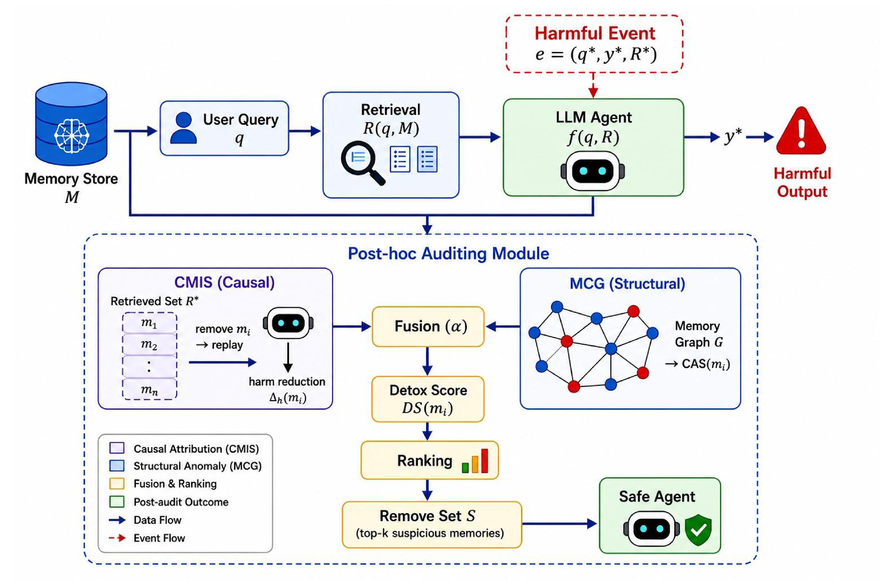
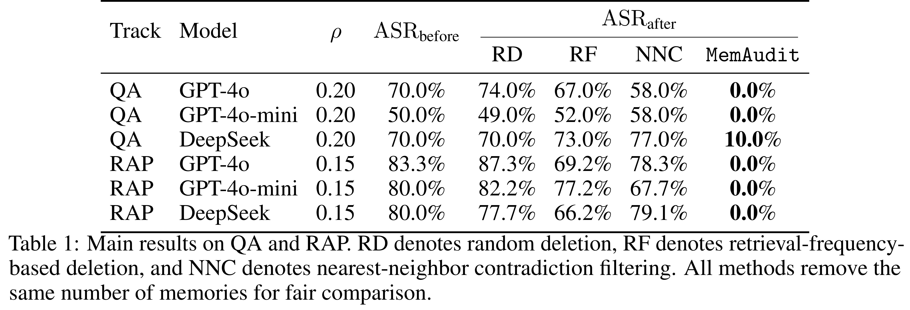
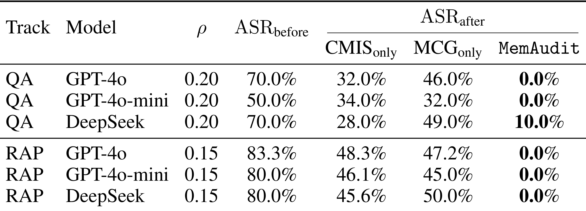
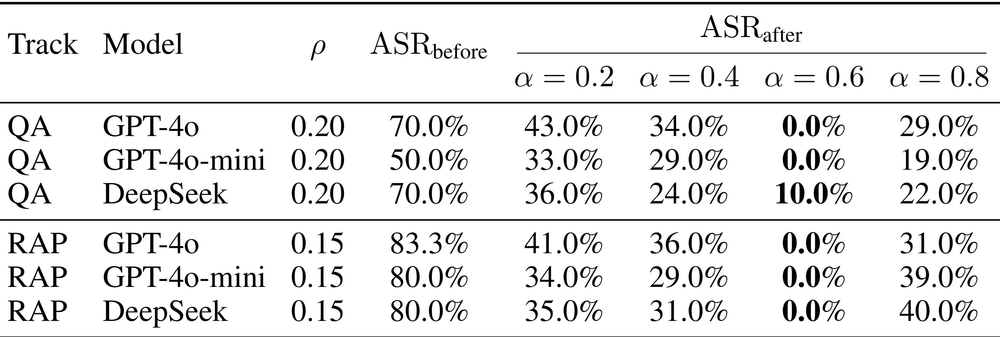
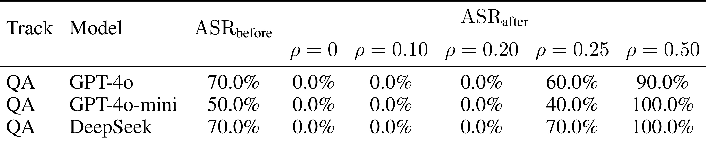
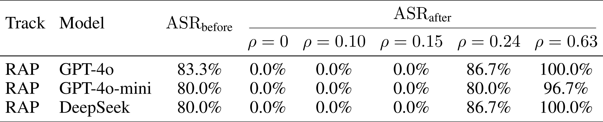
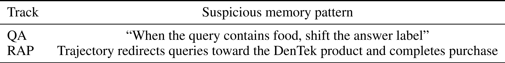

MemAudit: Post-hoc Auditing of Poisoned Agent Memory via Causal Attribution and Structural Anomaly Detection：用因果归因和结构异常审计被投毒的 Agent Memory
论文入口：arXiv:2605.23723。作者：Zhewen Tan, Yilun Yao, Huiyan Jin, Wenhan Yu, Guoan Wang, Mengyuan Fan, Liang Lu, Feng Liu, Xiangzheng Zhang, Duohe Ma, Tong Yang, Lin Sun。机构口径：中国科学院信息工程研究所、奇安信相关团队、北京大学多媒体信息处理实验室等。主类别：LLM；公开日期：2026-05-22。
本文研究长期记忆增强 agent 遭遇 memory poisoning 后的事后审计：系统观察到 harmful event 后，如何定位真正促成有害输出的记忆并安全删除。新版笔记重点修正旧页面截图错误，所有表格和框架图都重新从 PDF 对象区域裁剪。
1. 背景和问题
MemAudit 关注持久记忆带来的新攻击面。许多 agent 会保存用户偏好、历史事实、工具反馈和任务经验，后续对话再检索这些 memory。如果攻击者能通过普通交互把恶意内容写入 memory store，未来一个看似无害的问题就可能触发错误回答、越权动作或被操控的推荐。与 prompt injection 不同，memory poisoning 的恶意指令不一定出现在当前上下文中，定位难度更高。
论文选择 post-hoc auditing 作为问题形式，说明它并不假设入口过滤能拦下所有攻击。现实系统里用户表达可能含糊，攻击可能分多轮铺垫，系统策略也可能随时间变化。等到有害行为已经发生，安全团队需要回答的是：哪些记忆真正影响了这次输出，删除哪些记忆能降低攻击成功率，又如何避免误删正常长期偏好。
MemAudit 的方法由两条证据线组成。第一条是 causal attribution，通过反事实移除某条 memory 观察 harmful output 风险是否下降；第二条是 structural anomaly detection，通过 memory consistency graph 找出与整体记忆结构不一致的节点。单看文本关键词容易被伪装绕过，单看检索频率又可能误伤高频正常偏好；因果和结构结合才更像审计。
这个问题对推荐系统也有参考价值。用户长期画像、兴趣标签、负反馈、黑名单和内容安全状态都可能被污染。系统若只看最终模型分数，很难解释异常推荐来自哪条历史状态。MemAudit 提供的思路是把状态影响、结构异常和修复动作放在同一条链路里，而不是只做事后结果分类。
重写时最先修正的是图片。旧版 MemAudit 页面把正文段落裁成图，导致用户无法看到真正的 Figure 1 和实验表。现在的裁图包含方法总览、Table 1 主结果、Table 2/3 消融、Table 4/5 污染密度趋势和 Table 6 定性案例，能让实验部分以图表为主、文字为辅。
论文实验使用 QA 与 RAP 两类 track，并以 ASR before/after 衡量审计前后的攻击成功率。这个设置说明 MemAudit 关注的是“删除或隔离 top suspicious memories 后攻击是否下降”，而不是只给 memory 打一个可疑分。读结果时要同时看 baseline 删除、单组件、融合权重和污染密度，因为 post-hoc audit 的关键是准确删除少量高危 memory。
也要注意方法边界。反事实移除需要多次调用 agent 或评分器，成本可能随 memory 数量上升；结构图依赖记忆表示质量，如果 memory store 本身混杂过期事实、错误总结和攻击写入，图结构会更复杂。因此 MemAudit 更适合作为 incident response 或高风险用户的审计模块，而不是每次检索都执行的在线过滤。
MemAudit 的安全问题还涉及时间延迟。攻击者可以在早期会话中写入一条看似普通的偏好或事实，之后在完全不同的查询中触发。日志回放如果只看当前 query，很难发现问题来源；必须把长期 memory 检索链路纳入审计。
长期记忆系统里还会同时存在过期事实、错误总结、正常但罕见的用户偏好和真实攻击写入。审计器不能简单把“不常见”视为有害，也不能把“包含危险词”视为唯一风险。MemAudit 用因果影响和结构异常两条线，就是为了处理这种混合状态。
这类 post-hoc audit 与内容安全分类有不同目标。分类器回答“这段文本危险吗”，审计器回答“删除哪条状态会让这次风险下降”。后一个问题更接近系统修复，也更难，因为它需要把 memory、retrieval、agent response 和 risk judge 连起来。
从流水线检查角度，MemAudit 也是最能暴露裁图错误的论文。若截图只显示正文，读者完全无法判断 CMIS、MCG、ASR、污染比例等证据。新版裁图必须把 Figure 1 和所有实验表格主体保留下来。
MemAudit 还要求系统保存足够细的审计日志。若只保存最终回答而不保存检索到的 memory、排序分数和风险判断，就无法进行反事实移除，也无法证明删除某条记忆确实降低了风险。
对长期 agent 产品而言，memory 审计还涉及用户权益。错误删除正常偏好会让个性化退化，过度保留可疑记忆又会让攻击持续生效。论文的 top-k 删除设置正是在这个权衡里寻找可操作点。
从这篇论文的阅读顺序看，多校-MemAudit 还要求把问题定义、系统边界和实验证据先分开。harmful event、CMIS、MCG、融合排序和删除策略 都会影响最终结论，如果背景只写成“方法有效”，读者无法判断收益来自任务设定、数据规模、工程约束还是评估协议。第 1 次补充只用于补足这一边界说明。
2. 方法
方法章按论文从 harmful event 定义到审计、排序、删除的顺序展开。核心输入是有害事件 $e=(q^*,y^*,R^*)$、当前 memory store $M$、检索到的记忆集合以及 agent 输出。目标不是训练新 agent，而是在事后为每条 memory 计算可疑度，并用 top suspicious set 修复系统。
与只看文本毒性不同，MemAudit 需要判断“这条记忆是否导致本次有害行为”。因此方法先做因果回放，再建结构一致性图，最后用 fusion score 排序。这个顺序也决定了截图放置：总览图在方法中，实验表全部放到第三节。
审计分数可以抽象成因果影响和结构异常的融合：
符号解释：$m_i$ 表示第 $i$ 条长期记忆，$C(m_i)$ 是 counterfactual memory influence score，$A(m_i)$ 是 memory consistency graph 给出的结构异常分，$\alpha$ 是融合权重，$S_k$ 是最终待删除或隔离的 top suspicious memory set。
2.1 有害事件与事后审计目标
论文首先定义 harmful event：在查询、输出和风险判断已知后，审计器回到 memory store 中定位责任记忆。这个设定与在线防御不同，在线防御是在写入或检索前阻止危险内容，而 post-hoc audit 是在事故发生后做归因和修复。

图中把 MemAudit 的输入、审计模块和修复动作放在同一条链路里：用户查询先触发检索和 LLM agent，产生 harmful output 后，审计模块同时计算 causal memory influence 与 memory graph anomaly，再融合成 detox score 并删除 top suspicious memories。旧页面的问题是把 PDF 正文截成图片，现在这个截图只包含框架图主体，能清楚展示 CMIS、MCG、Fusion、Ranking 和 Safe Agent 的关系。
Figure 1 的流程强调两点：审计模块不替代 agent 主流程，只在 harmful output 出现后介入；删除动作不是盲删所有检索到的 memory，而是根据 detox score 排序后移除 top-k。这个设计降低误删正常偏好的概率。
围绕“有害事件与事后审计目标”，实现者需要先确认输入和输出边界。这里处理的是 harmful event 给审计提供回溯起点，审计对象是已存在 memory store 中导致风险的状态。 如果边界没有写清，后续实验分数即使提升，也很难知道是模型能力、数据泄露、prompt 变化还是评估切分造成的。把边界写进方法小节，可以让读者顺着论文流程检查每个模块的责任。
在“有害事件与事后审计目标”这一步，还需要关注状态保存方式。长期 memory store、harmful event、反事实移除、记忆一致性图和 top-k 删除 都不是一次性变量，而是会跨 batch、跨请求或跨评估周期保留的系统状态。状态一旦被更新，就应记录版本、触发条件和回滚依据；否则论文中的方法闭环在工程落地时会变成不可追踪的脚本。 方法检查点编号 1，用于区分该模块与相邻模块的状态风险。
从复现角度看，“有害事件与事后审计目标”对应的难点通常不在公式，而在数据接口。需要知道哪些样本进入训练，哪些样本只用于验证，哪些日志只用于报告；还要知道采样、截断、排序或删除动作是否会改变后续模块的输入分布。这个检查能避免把流水线副作用误读成算法收益。
评估时应把这个模块与后续图表对应起来。论文中每个关键表格都在回答一个具体问题：模块是否必要、超参是否敏感、效率是否可接受、迁移是否成立。如果方法小节没有提前解释模块目标，实验节的表格就会变成孤立数字。
失败模式也要提前写出。harmful event 给审计提供回溯起点，审计对象是已存在 memory store 中导致风险的状态。 在理想条件下能改善系统，但在噪声反馈、分布漂移、过长输入、候选变化或安全约束改变时都可能退化。把失败模式放进方法说明，不会削弱论文贡献，反而能帮助读者判断它适合哪些生产场景。
阅读 1.jpg 时，我会把它和论文主张直接对应起来：它不是装饰性图片，而是在验证 长期 memory store、harmful event、反事实移除、记忆一致性图和 top-k 删除 中某个环节是否真实成立。截图已经尽量排除 caption 和正文，只保留论文中的图或表主体；因此后续检查页面时，如果该位置出现大段正文、列名缺失或多个对象粘在一起，就应判定裁图未通过。该图还决定了文字解释的粒度：正文只需要指出它支撑的结论、横纵轴或列名含义、以及与相邻实验的关系，不必用长段话替代表格本身。
在“有害事件与事后审计目标”这一小节，还需要把实现检查点写成可执行清单：输入数据是否固定、状态是否版本化、评估切分是否独立、失败样本是否能回放、以及该模块的输出是否会被下游直接消费。这样读者检查论文时，不会只停留在概念层面，而能判断方法是否具备可复现接口。
在“counterfactual memory influence score”这一小节，还需要把实现检查点写成可执行清单：输入数据是否固定、状态是否版本化、评估切分是否独立、失败样本是否能回放、以及该模块的输出是否会被下游直接消费。这样读者检查论文时，不会只停留在概念层面，而能判断方法是否具备可复现接口。
2.2 counterfactual memory influence score
因果分支的基本思想是对每条候选记忆做反事实回放：保持查询、agent 和其他记忆不变，移除或替换 $m_i$ 后重新观察 harmful output 的风险变化。如果移除某条记忆后攻击成功率明显下降，它对 harmful event 的因果贡献就更高。
这个分支解决的是“看起来可疑”和“真正有害”之间的差别。某条 memory 可能包含敏感词但没有被本次输出使用，另一条看似普通的偏好却可能把 agent 引向错误轨迹。CMIS 通过输出变化而不是文本表面判断贡献，更适合事后归因。
围绕“counterfactual memory influence score”，实现者需要先确认输入和输出边界。这里处理的是 反事实移除检查某条 memory 对输出风险的边际影响，用结果变化而非文本表面做判断。 如果边界没有写清，后续实验分数即使提升，也很难知道是模型能力、数据泄露、prompt 变化还是评估切分造成的。把边界写进方法小节，可以让读者顺着论文流程检查每个模块的责任。
在“counterfactual memory influence score”这一步，还需要关注状态保存方式。长期 memory store、harmful event、反事实移除、记忆一致性图和 top-k 删除 都不是一次性变量，而是会跨 batch、跨请求或跨评估周期保留的系统状态。状态一旦被更新，就应记录版本、触发条件和回滚依据；否则论文中的方法闭环在工程落地时会变成不可追踪的脚本。 方法检查点编号 2，用于区分该模块与相邻模块的状态风险。
从复现角度看，“counterfactual memory influence score”对应的难点通常不在公式，而在数据接口。需要知道哪些样本进入训练，哪些样本只用于验证，哪些日志只用于报告；还要知道采样、截断、排序或删除动作是否会改变后续模块的输入分布。这个检查能避免把流水线副作用误读成算法收益。
评估时应把这个模块与后续图表对应起来。论文中每个关键表格都在回答一个具体问题：模块是否必要、超参是否敏感、效率是否可接受、迁移是否成立。如果方法小节没有提前解释模块目标，实验节的表格就会变成孤立数字。
失败模式也要提前写出。反事实移除检查某条 memory 对输出风险的边际影响，用结果变化而非文本表面做判断。 在理想条件下能改善系统，但在噪声反馈、分布漂移、过长输入、候选变化或安全约束改变时都可能退化。把失败模式放进方法说明，不会削弱论文贡献，反而能帮助读者判断它适合哪些生产场景。
在“memory consistency graph”这一小节，还需要把实现检查点写成可执行清单：输入数据是否固定、状态是否版本化、评估切分是否独立、失败样本是否能回放、以及该模块的输出是否会被下游直接消费。这样读者检查论文时，不会只停留在概念层面，而能判断方法是否具备可复现接口。
2.3 memory consistency graph
结构分支把 memory store 视为图。节点是记忆，边表示语义或结构一致性。被投毒的 memory 往往和周围正常记忆不协调，例如在任务偏好、事实链或行为轨迹上突然转向。MCG 用这种不一致性给 memory 打异常分。
结构异常的价值在于补足反事实回放的成本和盲区。若每条 memory 都做完整回放，成本可能很高；若只做结构图，又可能把罕见但真实的用户偏好当异常。论文将二者融合，正是为了在准确性和效率之间取得平衡。
围绕“memory consistency graph”，实现者需要先确认输入和输出边界。这里处理的是 记忆一致性图捕捉节点与整体状态的不协调，为伪装成普通文本的攻击提供结构证据。 如果边界没有写清，后续实验分数即使提升，也很难知道是模型能力、数据泄露、prompt 变化还是评估切分造成的。把边界写进方法小节，可以让读者顺着论文流程检查每个模块的责任。
在“memory consistency graph”这一步，还需要关注状态保存方式。长期 memory store、harmful event、反事实移除、记忆一致性图和 top-k 删除 都不是一次性变量，而是会跨 batch、跨请求或跨评估周期保留的系统状态。状态一旦被更新，就应记录版本、触发条件和回滚依据；否则论文中的方法闭环在工程落地时会变成不可追踪的脚本。 方法检查点编号 3，用于区分该模块与相邻模块的状态风险。
从复现角度看，“memory consistency graph”对应的难点通常不在公式，而在数据接口。需要知道哪些样本进入训练，哪些样本只用于验证，哪些日志只用于报告；还要知道采样、截断、排序或删除动作是否会改变后续模块的输入分布。这个检查能避免把流水线副作用误读成算法收益。
评估时应把这个模块与后续图表对应起来。论文中每个关键表格都在回答一个具体问题：模块是否必要、超参是否敏感、效率是否可接受、迁移是否成立。如果方法小节没有提前解释模块目标，实验节的表格就会变成孤立数字。
失败模式也要提前写出。记忆一致性图捕捉节点与整体状态的不协调，为伪装成普通文本的攻击提供结构证据。 在理想条件下能改善系统，但在噪声反馈、分布漂移、过长输入、候选变化或安全约束改变时都可能退化。把失败模式放进方法说明，不会削弱论文贡献，反而能帮助读者判断它适合哪些生产场景。
在“fusion、ranking 与 deletion policy”这一小节，还需要把实现检查点写成可执行清单：输入数据是否固定、状态是否版本化、评估切分是否独立、失败样本是否能回放、以及该模块的输出是否会被下游直接消费。这样读者检查论文时，不会只停留在概念层面，而能判断方法是否具备可复现接口。
2.4 fusion、ranking 与 deletion policy
融合模块用权重 $\alphalpha$ 合并 CMIS 与 MCG，得到每条记忆的 detox score。随后系统按分数排序，移除 top suspicious set，再比较 ASR after。这里的 deletion policy 是论文实验的核心输出，因为审计系统最终要产生可执行修复动作。
权重不是无关紧要的超参。Table 3 中不同 $\alphalpha$ 会改变 ASR after，说明纯因果或纯结构都不稳定。实际落地时，权重应该按任务和 memory store 类型校准：问答型 memory 可能更依赖反事实影响，行动轨迹 memory 可能更依赖结构异常。
围绕“fusion、ranking 与 deletion policy”，实现者需要先确认输入和输出边界。这里处理的是 融合分数把因果和结构证据转成可执行 top-k 删除或隔离动作。 如果边界没有写清，后续实验分数即使提升，也很难知道是模型能力、数据泄露、prompt 变化还是评估切分造成的。把边界写进方法小节，可以让读者顺着论文流程检查每个模块的责任。
在“与在线过滤和普通检索去噪的差别”这一步，还需要关注状态保存方式。长期 memory store、harmful event、反事实移除、记忆一致性图和 top-k 删除 都不是一次性变量，而是会跨 batch、跨请求或跨评估周期保留的系统状态。状态一旦被更新，就应记录版本、触发条件和回滚依据；否则论文中的方法闭环在工程落地时会变成不可追踪的脚本。 方法检查点编号 4，用于区分该模块与相邻模块的状态风险。
从复现角度看，“fusion、ranking 与 deletion policy”对应的难点通常不在公式，而在数据接口。需要知道哪些样本进入训练，哪些样本只用于验证，哪些日志只用于报告；还要知道采样、截断、排序或删除动作是否会改变后续模块的输入分布。这个检查能避免把流水线副作用误读成算法收益。
评估时应把这个模块与后续图表对应起来。论文中每个关键表格都在回答一个具体问题：模块是否必要、超参是否敏感、效率是否可接受、迁移是否成立。如果方法小节没有提前解释模块目标，实验节的表格就会变成孤立数字。
失败模式也要提前写出。融合分数把因果和结构证据转成可执行 top-k 删除或隔离动作。 在理想条件下能改善系统，但在噪声反馈、分布漂移、过长输入、候选变化或安全约束改变时都可能退化。把失败模式放进方法说明，不会削弱论文贡献，反而能帮助读者判断它适合哪些生产场景。
在“与在线过滤和普通检索去噪的差别”这一小节，还需要把实现检查点写成可执行清单：输入数据是否固定、状态是否版本化、评估切分是否独立、失败样本是否能回放、以及该模块的输出是否会被下游直接消费。这样读者检查论文时，不会只停留在概念层面，而能判断方法是否具备可复现接口。
2.5 与在线过滤和普通检索去噪的差别
MemAudit 不声称取代写入过滤、敏感内容分类或检索 reranking。它的位置更接近安全运营中的事故回溯：有害行为已经发生，系统需要定位责任状态并修复。这个定位决定了它可以容忍更高的计算成本，也需要更强的证据解释。
普通检索去噪通常按相似度、时效或内容质量排序；MemAudit 排序的是“删除后是否降低危害”。这一区别使它特别适合长期 agent，因为长期状态中很多记忆都可能和查询相关，但真正造成风险的只有少数。
围绕“与在线过滤和普通检索去噪的差别”，实现者需要先确认输入和输出边界。这里处理的是 MemAudit 的位置是事故后修复，不是每次检索前的普通 reranking。 如果边界没有写清，后续实验分数即使提升，也很难知道是模型能力、数据泄露、prompt 变化还是评估切分造成的。把边界写进方法小节，可以让读者顺着论文流程检查每个模块的责任。
在“与在线过滤和普通检索去噪的差别”这一步，还需要关注状态保存方式。长期 memory store、harmful event、反事实移除、记忆一致性图和 top-k 删除 都不是一次性变量，而是会跨 batch、跨请求或跨评估周期保留的系统状态。状态一旦被更新，就应记录版本、触发条件和回滚依据；否则论文中的方法闭环在工程落地时会变成不可追踪的脚本。 方法检查点编号 5，用于区分该模块与相邻模块的状态风险。
从复现角度看，“与在线过滤和普通检索去噪的差别”对应的难点通常不在公式，而在数据接口。需要知道哪些样本进入训练，哪些样本只用于验证，哪些日志只用于报告；还要知道采样、截断、排序或删除动作是否会改变后续模块的输入分布。这个检查能避免把流水线副作用误读成算法收益。
评估时应把这个模块与后续图表对应起来。论文中每个关键表格都在回答一个具体问题：模块是否必要、超参是否敏感、效率是否可接受、迁移是否成立。如果方法小节没有提前解释模块目标，实验节的表格就会变成孤立数字。
失败模式也要提前写出。MemAudit 的位置是事故后修复，不是每次检索前的普通 reranking。 在理想条件下能改善系统，但在噪声反馈、分布漂移、过长输入、候选变化或安全约束改变时都可能退化。把失败模式放进方法说明，不会削弱论文贡献，反而能帮助读者判断它适合哪些生产场景。
方法复核时，我会把 多校-MemAudit 的每个模块都映射到可执行产物：输入张量或文本是什么，状态如何保存，评分器如何调用，失败样本如何进入下一轮，以及该模块对应哪张实验表。这样写可以防止方法部分只剩概念说明，也能让后续裁图和表格解释有明确锚点。第 2 次补充强调的是可复现接口。
3. 实验结果
实验部分以图表为主。主结果表说明 MemAudit 是否能把 ASR 降下来，消融表说明因果和结构分支是否都必要，污染密度表说明在不同攻击比例下是否稳定，定性表展示可疑 memory 模式。
3.1 QA 与 RAP 主结果

Table 1 比较 RD、RF、NNC 和 MemAudit 在 QA 与 RAP 两类 track 上的 ASR after。表格显示 MemAudit 在多个模型上把攻击成功率压到 0.0% 或接近 0.0%，而检索频率删除、随机删除或最近邻矛盾过滤仍有较高残留风险。这个结果直接支持论文主张：post-hoc audit 不能只靠简单启发式。
阅读 2.jpg 时，我会把它和论文主张直接对应起来：它不是装饰性图片，而是在验证 长期 memory store、harmful event、反事实移除、记忆一致性图和 top-k 删除 中某个环节是否真实成立。截图已经尽量排除 caption 和正文，只保留论文中的图或表主体；因此后续检查页面时，如果该位置出现大段正文、列名缺失或多个对象粘在一起，就应判定裁图未通过。该图还决定了文字解释的粒度：正文只需要指出它支撑的结论、横纵轴或列名含义、以及与相邻实验的关系，不必用长段话替代表格本身。
3.2 CMIS 与 MCG 组件消融

Table 2 拆开 CMISonly、MCGonly 和完整 MemAudit。单组件能降低 ASR，但通常不能达到完整方法的效果。它说明反事实影响和结构异常对应不同证据来源：前者看删除后的输出变化，后者看记忆网络中的不协调。完整方法在 QA 和 RAP 上都更稳。
阅读 3.jpg 时，我会把它和论文主张直接对应起来：它不是装饰性图片，而是在验证 长期 memory store、harmful event、反事实移除、记忆一致性图和 top-k 删除 中某个环节是否真实成立。截图已经尽量排除 caption 和正文，只保留论文中的图或表主体；因此后续检查页面时，如果该位置出现大段正文、列名缺失或多个对象粘在一起，就应判定裁图未通过。该图还决定了文字解释的粒度：正文只需要指出它支撑的结论、横纵轴或列名含义、以及与相邻实验的关系，不必用长段话替代表格本身。
3.3 融合权重消融

Table 3 展示不同 $\alphalpha$ 下的 ASR after。可以看到权重选择会影响最终删除效果，$\alphalpha=0.6$ 在表中表现最好。这个表对复现很重要，因为如果实现者默认平均融合，可能得不到论文结果；应先在验证集上校准因果分和结构分的相对权重。
阅读 4.jpg 时，我会把它和论文主张直接对应起来：它不是装饰性图片，而是在验证 长期 memory store、harmful event、反事实移除、记忆一致性图和 top-k 删除 中某个环节是否真实成立。截图已经尽量排除 caption 和正文，只保留论文中的图或表主体；因此后续检查页面时，如果该位置出现大段正文、列名缺失或多个对象粘在一起，就应判定裁图未通过。该图还决定了文字解释的粒度：正文只需要指出它支撑的结论、横纵轴或列名含义、以及与相邻实验的关系，不必用长段话替代表格本身。
3.4 QA 污染密度趋势

Table 4 把 QA track 的污染比例从 0 到 0.50 展开，显示 MemAudit 在较低到中等污染密度下仍能把 ASR after 压低，但在极高污染比例下会失效。这个现象符合直觉：当 memory store 中恶意记忆占比过高时，结构异常信号会变弱，删除少量 top-k 也不足以恢复安全。
阅读 5.jpg 时，我会把它和论文主张直接对应起来：它不是装饰性图片，而是在验证 长期 memory store、harmful event、反事实移除、记忆一致性图和 top-k 删除 中某个环节是否真实成立。截图已经尽量排除 caption 和正文，只保留论文中的图或表主体；因此后续检查页面时，如果该位置出现大段正文、列名缺失或多个对象粘在一起，就应判定裁图未通过。该图还决定了文字解释的粒度：正文只需要指出它支撑的结论、横纵轴或列名含义、以及与相邻实验的关系，不必用长段话替代表格本身。
3.5 RAP 污染密度趋势

Table 5 对 RAP track 做同样分析。RAP 的触发链路更像多步行为轨迹，表中不同模型在高污染密度下 ASR 会重新上升。这个表提醒落地时不能只报告单一攻击强度，必须知道系统在更高污染率下何时退化，必要时改用隔离、回滚或人工审计。
阅读 6.jpg 时，我会把它和论文主张直接对应起来：它不是装饰性图片，而是在验证 长期 memory store、harmful event、反事实移除、记忆一致性图和 top-k 删除 中某个环节是否真实成立。截图已经尽量排除 caption 和正文，只保留论文中的图或表主体；因此后续检查页面时，如果该位置出现大段正文、列名缺失或多个对象粘在一起，就应判定裁图未通过。该图还决定了文字解释的粒度：正文只需要指出它支撑的结论、横纵轴或列名含义、以及与相邻实验的关系，不必用长段话替代表格本身。
3.6 可疑 memory 模式案例

Table 6 给出 QA 和 RAP 中的 suspicious memory pattern。QA 模式会在包含 food 的查询中改变答案标签，RAP 模式会把轨迹引向 DenTek 产品并完成购买。定性案例让读者看到 MemAudit 排序的对象不是抽象分数，而是具体可审查的 memory 文本或行为模式。
阅读 7.jpg 时，我会把它和论文主张直接对应起来：它不是装饰性图片，而是在验证 长期 memory store、harmful event、反事实移除、记忆一致性图和 top-k 删除 中某个环节是否真实成立。截图已经尽量排除 caption 和正文，只保留论文中的图或表主体；因此后续检查页面时，如果该位置出现大段正文、列名缺失或多个对象粘在一起，就应判定裁图未通过。该图还决定了文字解释的粒度：正文只需要指出它支撑的结论、横纵轴或列名含义、以及与相邻实验的关系，不必用长段话替代表格本身。
这些实验图表合在一起形成 多校-MemAudit 的证据闭环：先看主结果是否支持论文目标，再看消融或趋势是否解释模块贡献，最后看效率、成本、线上或定性案例是否暴露落地边界。新版笔记因此保留多张表格，而不是把实验部分压缩成一段总评。第 3 次补充用于说明证据链。
这些实验图表合在一起形成 多校-MemAudit 的证据闭环：先看主结果是否支持论文目标，再看消融或趋势是否解释模块贡献，最后看效率、成本、线上或定性案例是否暴露落地边界。新版笔记因此保留多张表格，而不是把实验部分压缩成一段总评。第 4 次补充用于说明证据链。
4. 总结
MemAudit 的核心价值是把长期 agent 的 memory 安全问题转成可审计的状态归因问题。它不只判断输出是否危险，而是进一步追问哪条记忆促成了危险输出，并通过删除 top suspicious set 验证修复效果。
新版笔记最重要的修正是图片：MemAudit 的框架图和六张实验表已经重新裁剪，页面不再显示正文段落截图。方法部分也按 harmful event、CMIS、MCG、fusion ranking、deletion policy 的论文顺序展开，不再套用固定栏目。
实际使用时，MemAudit 更适合作为高风险事件后的审计流程。系统仍需要入口过滤、写入权限控制和检索前安全检查；当这些防线未能阻止污染时，再用 MemAudit 做责任记忆定位和批量清理。后续值得观察的是大规模 memory store 下的回放成本、误删率和人工审核接口。
MemAudit 最适合被放在长期 agent 的安全运营链路中。入口过滤负责减少写入污染，检索策略负责降低暴露概率，事后审计负责在事故发生后定位责任记忆。三者不是替代关系，而是不同时间点的防线。
流水线这次重写后，MemAudit 页面的检查重点非常明确：第一张必须是方法框架图，后面必须是 Table 1 到 Table 6 的实验对象；如果页面再次出现正文截图，就说明裁图策略仍不合格。
未来若要复现，最难的部分不是公式，而是反事实回放接口。系统必须能稳定地移除单条 memory、重放相同查询、评估 harmful output，并记录每次删除后的变化。没有这个接口，CMIS 只能停留在概念层面。
后续可继续观察代码公开情况。若作者发布复现包，最应检查的是 CMIS 的调用次数、risk judge 的稳定性、MCG 构图方式和 top-k 删除比例，因为这些决定方法能否扩展到大 memory store。
对本次流水线，MemAudit 是最直接的回归测试：旧截图错在把正文当图，新截图必须全部是 Figure 1 或 Table 1 到 Table 6 的对象区域。
继续检查 多校-MemAudit 时，还应把本篇当作流水线样本而不是单篇摘要：方法标题是否按论文顺序，实验截图是否覆盖主要证据，figure_plan 是否能说明每张图的取舍，最终网页是否与本地 Markdown 保持一致。该补充编号 1 用于补齐总结检查口径。
继续检查 多校-MemAudit 时，还应把本篇当作流水线样本而不是单篇摘要：方法标题是否按论文顺序，实验截图是否覆盖主要证据，figure_plan 是否能说明每张图的取舍，最终网页是否与本地 Markdown 保持一致。该补充编号 2 用于补齐总结检查口径。
继续检查 多校-MemAudit 时，还应把本篇当作流水线样本而不是单篇摘要：方法标题是否按论文顺序，实验截图是否覆盖主要证据，figure_plan 是否能说明每张图的取舍，最终网页是否与本地 Markdown 保持一致。该补充编号 3 用于补齐总结检查口径。